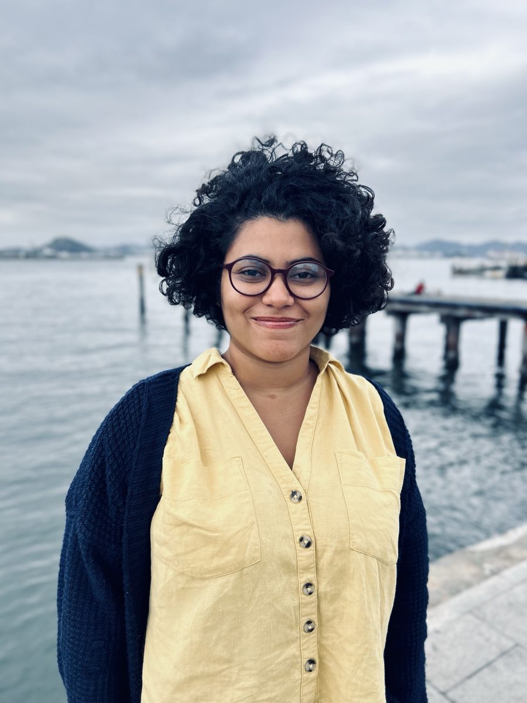

Globo
Editora de Mídias Audiovisuais II
2022 até hoje
Edição de conteúdo jornalístico em colaboração com equipes multidisciplinares. Algumas reportagens:
Pesquisadora de audiovisual e montadora no Rio de Janeiro. No mestrado em Comunicação da PUC-Rio, estudo telenovela, arquivo e identidades negras. Em dez anos de montagem, da Globo à Moldura, aprendi como uma narrativa se constrói e como ela chega ao público. Agora quero levar essas duas frentes para a pesquisa no mercado audiovisual.

PPGCOM PUC-Rio, bolsista CAPES
Orientação: Profa. Dra. Tatiana Siciliano
Minha pesquisa estuda A Nobreza do Amor (TV Globo, 2026) como fábula afro-brasileira: a construção de mundos ficcionais, o melodrama geográfico e a imaginação de uma identidade nacional ligada à África.
Apresentação no XVIII PÓSCOM, GT7 Encontro Discente, PUC-Rio.
Resumo expandido para o Intercom, GP Comunicação Antirracista e Pensamento Afrodiaspórico. Análise de uma cena da novela com Stuart Hall e Erving Goffman.
Livro de poemas sobre luto e memória, publicado pela TAUP. Comprar o livro
Roteiro e pesquisa de longa documental sobre memória política brasileira, aprovado no edital de desenvolvimento do FSA.
Telejornalismo, filmes de memória, vídeo-ensaio e documentário.
Editora de Mídias Audiovisuais II
2022 até hoje
Edição de conteúdo jornalístico em colaboração com equipes multidisciplinares. Algumas reportagens:
Montadora
2025 até hoje
Montagem de filmes sobre memória e histórias de vida, com linguagem de cinema.
Editora de redes sociais
2025 a 2026
Edição de conteúdo para as redes sociais da plataforma. O vídeo de maior alcance que fiz para eles:
Edição de vídeo-ensaios
Montagem de vídeo-ensaios em inglês para o canal do escritor, sobre animação, fantasia e escrita.
Videomaker
2019 a 2020
Produção de vídeos institucionais e jornalísticos.
Educadora
2017 a 2020
Vídeo publicado pelo Observatório de Favelas.
Curso de documentário
2021
Exercícios práticos de narrativa documental.
Estagiária de produção
2016 a 2017
Captação e edição de material audiovisual em eventos culturais.
No Instagram, comento telenovela, teoria e literatura em vídeos curtos. Os três reels sobre A Nobreza do Amor somam mais de 140 mil visualizações.
Uma cena de A Nobreza do Amor lida a partir de Stuart Hall.
Comentário sobre A Nobreza do Amor.
Comentário rápido sobre A Nobreza do Amor.
O autorretrato literário de Gabriel García Márquez.
Um trecho de Maya Angelou.
Um trecho de Capitães da Areia, de Jorge Amado.
Graduação em Estudos de Mídia, 2026
Preparei aulas e debates para a turma, como as análises dos episódios piloto de The Bear e Fleabag, com estudos dirigidos e perguntas norteadoras.
Educadora, 2017 a 2020
Atuei na criação e gestão do CineBela, cineclube na Maré que se tornou sala de cinema, com curadoria de sessões, mediação cultural e formação de público.